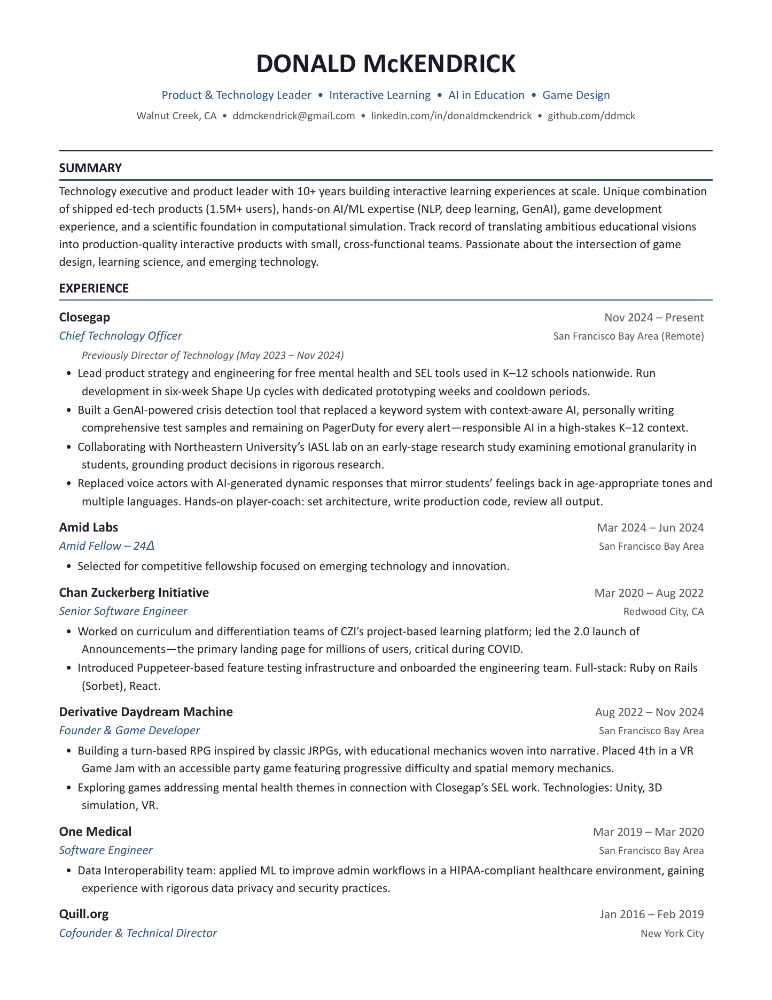

Closegap
Chief Technology OfficerI lead product and engineering for mental health and SEL tools used in K-12 schools.
I'm a CTO and software engineer with a background in education, AI, and game development. I co-founded Quill, which grew to more than 1.5 million users, and now lead product and engineering at Closegap.
I'm available for fractional CTO and advisory work.
Product and technical direction: Deciding what to build, how to build it, and where the risks are.
Hands-on development: Prototyping and shipping, especially for AI and learning products.
Engineering leadership: Team structure, hiring, process, and support for technical leads.
I lead product and engineering for mental health and SEL tools used in K-12 schools.
I helped grow an open-source literacy platform from 10,000 to more than 1.5 million users.
I worked on curriculum and differentiation products for a project-based learning platform.
I worked on the data interoperability team in a HIPAA-compliant healthcare environment.
Independent game development, including an educational RPG and VR prototypes.

Read the full resumeI'm based in Walnut Creek, California, and work remotely. If you'd like to discuss fractional CTO or advisory work, email me.